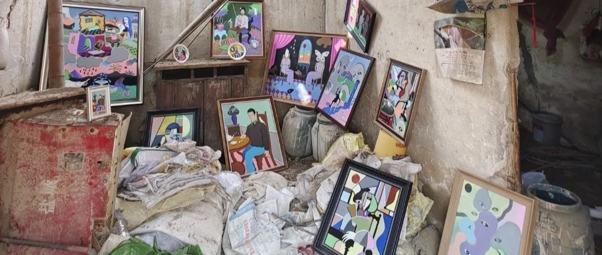

《油畫之緣》
《憶》
時間過得可真快呀！
不知不覺間已經喜歡作者的作品三年多了……
依稀記得哪是2019年7月29日第一次購買作者的作品，到2022年9月30日，斷斷續續已經購買作者10副作品了，我收藏的作品有《自畫像》《兩個人的世界》《緬甸女子》《兩個人的蛻變》《空中樓閣》《端紅酒杯的女子》《看書的男孩》《哭泣的女子》《玩具人》《社恐》……
很榮幸可以搶購到我喜歡的油畫作品，感謝這些作品，陪伴我渡過三年快樂時光，老房子已經年久失修，隨時都要倒塌，帶著我喜歡的作品來到我生活的地方留念，想著自己的手術越來越近！我卻開心不起來，怎麼安排這些作品呢？我記得有一次我想要在抖音平台上，售賣我收藏的這些作品！（我記得當時的我是這樣寫的，因本人手術將近無力保存這些手繪作品現在在抖音售賣……前提是你喜歡這些作品，了解這些作品，能夠“照顧”好這些作品，我不希望這些作品，孤獨，孤單……
1/你喜歡作者的手繪油畫作品嗎？
2/你知道作者的售賣時間是什麼時候嗎？
3/你喜歡作者這些作品嗎？《我喜歡》
4/你知道作者想記錄什麼?
5/你知道作者為什麼這樣繪畫？
6/你知道作者經歷了什麼?
7/你知道作者為什麼會用這樣的情感表達？
8/每一副作品都有“他她它”獨有的生命和表達形式！
《感悟》
喜歡一件物品不是擁有“他”
而是希望“他”可以過得更好，更幸福？